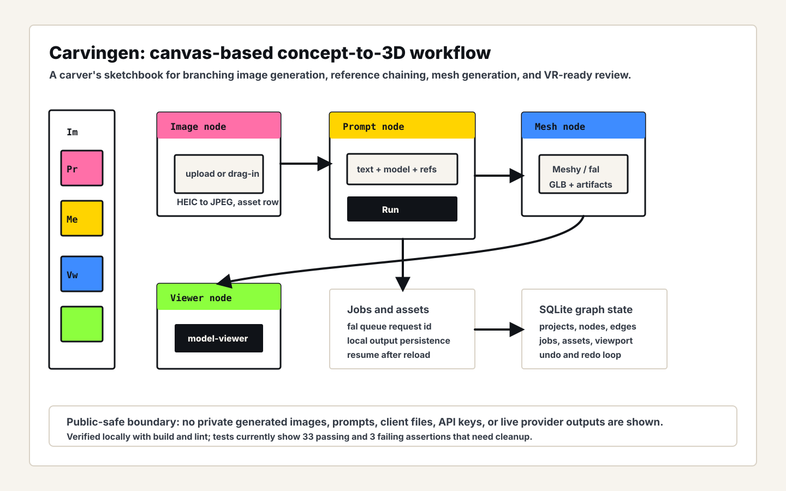
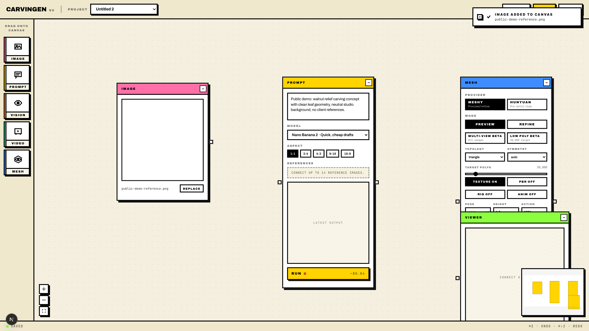
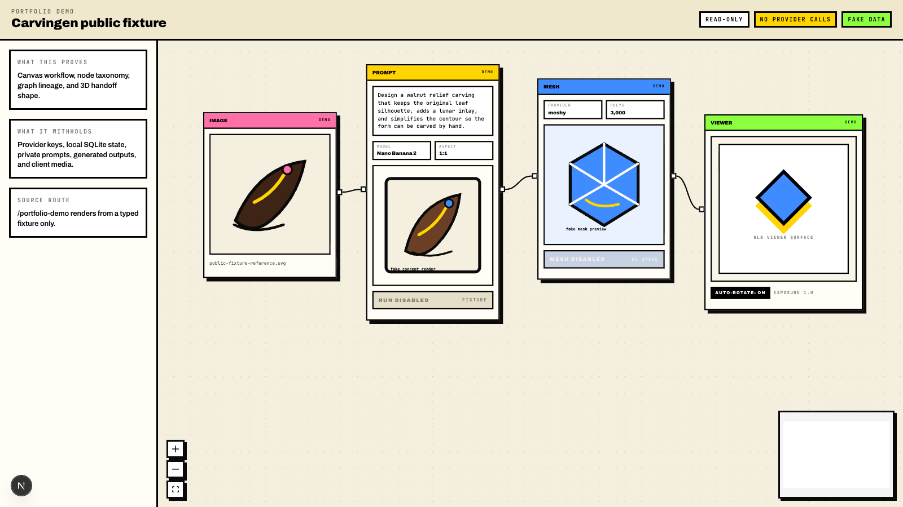

Problem
Creative iteration with AI models often happens in linear chat: prompt, image, revision, another image, then a separate jump into 3D tooling. The lineage gets lost, references are awkward to reuse, and the workflow does not match how people compare branches of an idea.
What I Built
Carvingen turns that into a spatial canvas. Image, Prompt, Mesh, and Viewer nodes let you drag in references, generate variations, branch from any output, send a chosen image into Meshy/fal image-to-3D, persist assets locally, and inspect the resulting GLB through a model viewer.
- Canvas workflowReact Flow graph with prompt, image, mesh, and viewer nodes.
- Provider boundaryfal image models, Meshy image-to-3D, local job records, and persisted assets.
- Operator fitBuilt for branching creative decisions rather than one-shot generation.



/portfolio-demo proof captured from the source app. The route renders typed fixture data, disables generation controls, and makes no project, job, fal, or asset-persistence API requests.Technical Decisions
- Use a graph canvas so iteration history becomes visible and branchable.
- Separate graph state from jobs and assets so reloads do not lose provider work.
- Make generation explicit-run to avoid quietly spending money on model calls.
- Persist provider output locally because remote result URLs are not the durable source of truth.
What This Proves
Carvingen is transformation evidence: domain taste, AI media integration, workflow design, local persistence, and practical product engineering for a real creative business process.
Public Evidence
- Local source inspected; public transcript records only sanitized implementation evidence.
pnpm buildpassed.pnpm lintpassed.pnpm testpassed with 44 tests across 10 files.pnpm test:e2e:localpassed, including the portfolio demo route.- Fake-data runtime canvas captured from an isolated temporary database.
- Static fixture demo captured from
/portfolio-demowith no API requests. - Proof transcript — available on request.
Privacy Boundary
Generated images, prompts, provider keys, database contents, and unreleased media stay private. The demo route runs on fixture data; a full walkthrough is available on request.